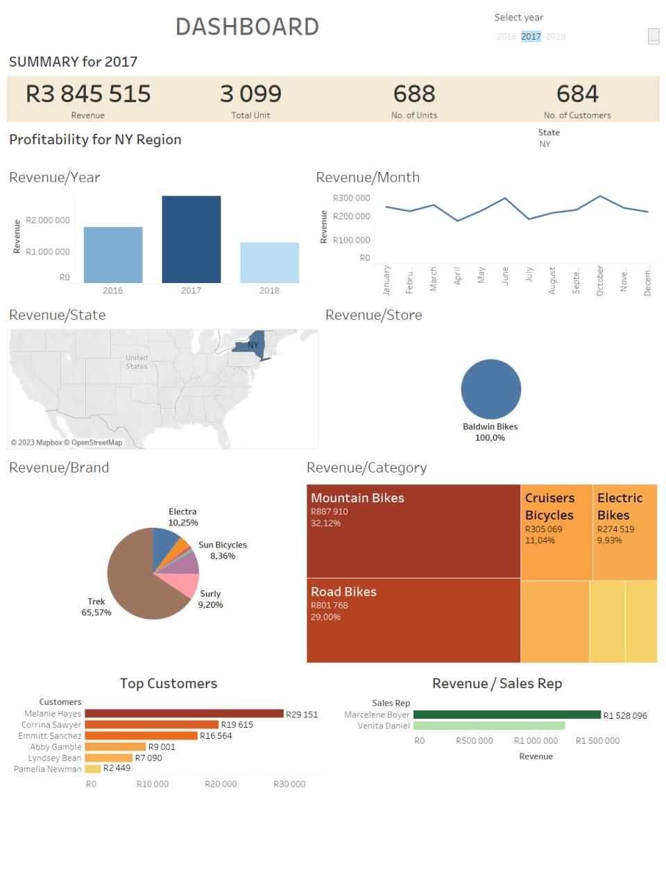

Greetings. I am Remofilwe Mamabolo Bcom Informatics Graduate and this is my portfolio
Projects

Cleaned data in SQL, imported dataset to Excel, and used pivot tables to create graphs. Created responsive dashboards in Excel and Tableau
The objective of this project is to use R to explore the Crime Statistics dataset and come up with some interesting questions which you should answer using all the knowledge you’ve learned .